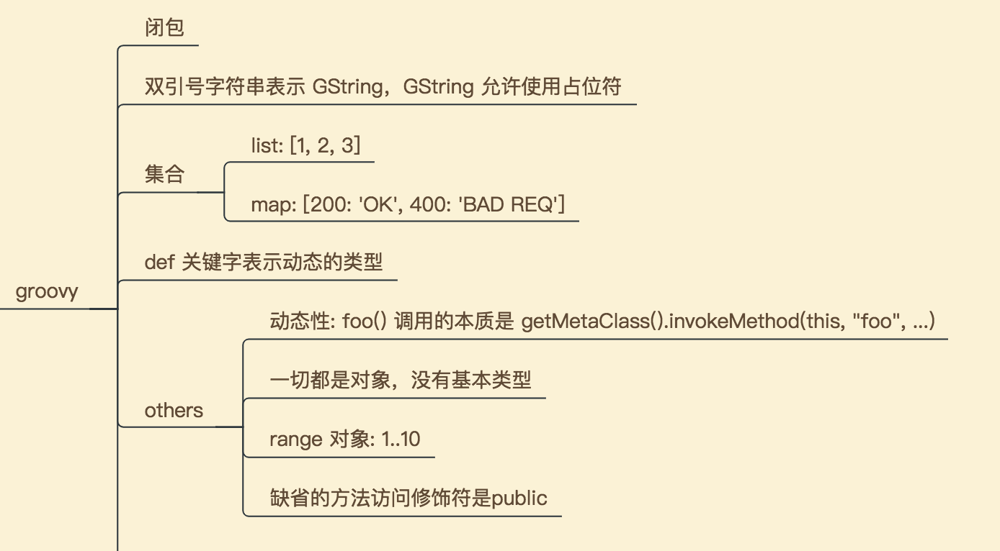
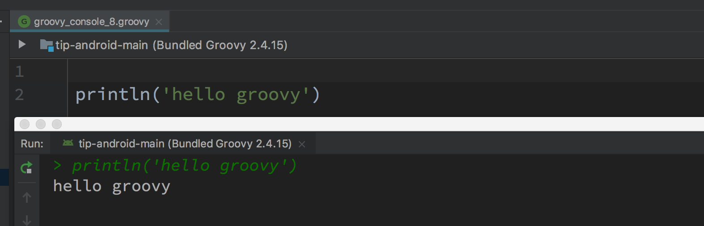
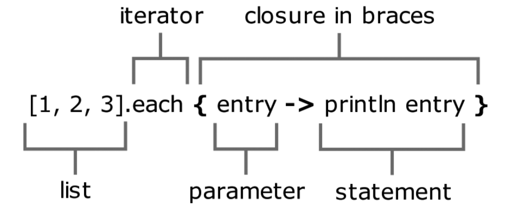
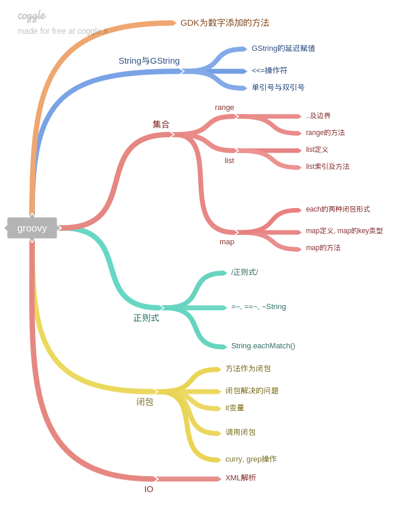
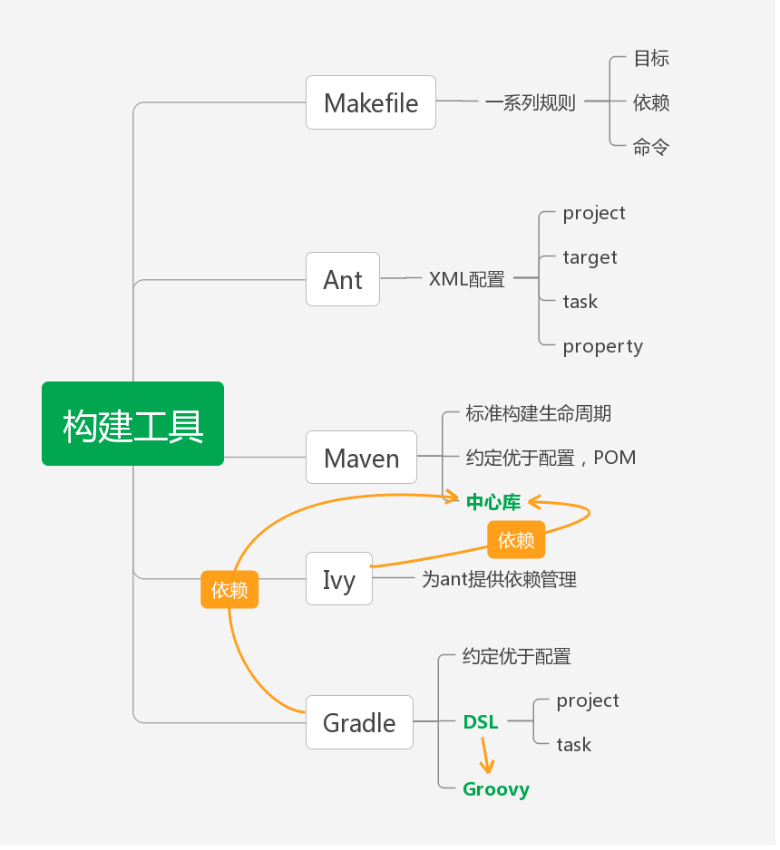

Groovy
Github 上搜索热门的 groovy 项目，发现屈指可数。star 数大于 2000 的项目才 7 个。
看来它的热度实在不怎么样。但考虑到 Gradle 的影响力，还是有必要粗略地了解一下这门语言。
先上要点(排名分先后)：

工具
之所以要把工具放在第一个讲，是因为只要你打开了 Android Studio，其实是很容易尝试写 groovy 代码的。
Android Studio > Tools > Groovy Console

Tips：
- 你也可以在 Groovy Console 写 Java 代码，所以如果下次想验证某个 Java API 的用法不如先在 Groovy Console 下先试一下
- 找不到 Groovy Console 入口的话，双击 Shift 搜索 groovy console
闭包
闭包是 groovy 最为强大的功能。
简介

你其实使用过闭包，只是没有意识到而已。比如java.io.File.list(FilenameFilter)，FilenameFilter接口只有一个filter()方法，这个方法对list()返回的列表进行过滤。而FilenameFilter接口存在的唯一意义就在于定义filter()方法。这是一种设计模式：方法对象模式(Method-Object pattern)。这种设计模式通常用来模拟一个行为：为一个目的定义一个独立的方法接口，这个接口的实例能够传递一组参数给方法，然后调用这个接口方法。相当繁琐，且导致非常多的类。虽然可以使用Java匿名类，但是会让代码更难理解。
看看 Groovy 中是怎么做的。第一种是 Java 的处理方式，第二种是 Groovy 的处理方式。后一种方式是不是简单很多？
1 | [1, 2, 3].forEach(new Consumer<Integer>() { |
Closure定义如下。Closure 表示 Groovy 中的闭包对象，它是一个普通的 Java 类。
1 | public abstract class Closure<V> { |
用法
Groovy 允许 Closure 以如下形式被调用：
1 | def a = 1 |
简单来说，一个闭包是被包装为一个对象的代码块，见如下代码：
1 | log = '' |
这里使用 Groovy 写个 Visitor 模式：
1 | class Shape { |
你能找出谁是 Visitor 吗？
理解闭包
Closure 有三个属性，分别是 this, owner, delegate, 通常delegate被设置为 owner 来源
1 | def testClosure(closure) { |
输出如下：
1 | this is ideaGroovyConsole@610f7aa, super:groovy.lang.Script |
每个闭包都有一个委托对象，Groovy 使用它来查找变量和方法的引用，而不是作为闭包的局部变量或参数。Gradle 在配置闭包中使用到它，把委托对象设置为被配置的对象。
1 | dependencies { |
GString
GString 中可以使用占用位，格式化字符串时特别方便。
1 | def name = 'cm' |
举例说明 GString 的用法：
1 | 4.times { |
集合
Java 中无法直接表示 List 字面量和 Map 字面量，非常不便。Groovy 解决了这个痛点：
1 | def list = [1, 2, 3] |
def 类型
Groovy 中 def 关键字表示动态类型(或者说是没有类型，但内部实际上是 Object 类型)。
其他话题
参数类型
1 | def oracle(Object o) { return 'object' } |
以上这段 Groovy 代码输出：
1 | object |
1 | public class T { |
以上这段 Java 代码输出：
1 | object |
对比可以发现，Groovy 使用参数的动态类型来查找方法，而 Java 使用参数的静态类型来查找方法。Java 这种做法有问题，以 equals() 方法为例，
1 | public boolean equals(Object obj) { |
Java 这种做法似乎是主动丢失掉类型信息。
MetaClass
在 Groovy 中，所有的对象都实现了 GroovyObject 接口。
1 | public interface GroovyObject { |
MetaClass 是 Groovy 元概念的核心，它提供了一个 Groovy 类的所有的元数据，如可用的方法、属性列表。
GroovyObject 的 invokeMethod 方法默认实现总是转到相应的 MetaClass。
MetaClass 被存储在一个名称为 MetaClassRegistry 的中心存储器中。
Groovy 代理与委托
1 | task configClosure << { |
完整内容

Gradle DSL
Gradle DSL 对 DSL 有详细的描述。
先来看几个基本概念。
下表显示了每种Gradle脚本的代理对象。可以在脚本中使用代码对象的属性和方法。
| script类型 | 代理对象 | 对应文件 |
|---|---|---|
| 构建脚本 | Project | build.gradle |
| 初始化脚本 | Gradle | init.gradle? |
| 设置脚本 | Settings | setting.gradle |
脚本结构
- 构建脚本由零个语句或脚本块组成
- 语句
- 方法调用
- 属性赋值
- 本地变量声明
- 脚本块，实质上是一个接收闭包作为参数的方法调用。顶层的常用脚本块包括：
- allprojects { }) - 对项目及子项目进行配置
- buildscript { }) - 构建脚本的类路径
- dependencies { }) - 当前项目的依赖
- repositories { }) - 当前项目的中央库
- 构建脚本是Groovy脚本，可以包含方法定义和类定义
主要类型
| 类型 | 描述 |
|---|---|
| Project | Gradle的主要API接口 |
| Task | 构建中最小的工作单元 |
| Gradle | 代表对Gradle的一次调用 |
| Settings | 用于配置和初始化Project实例 |
| Script | |
| SourceSet | Java代码和资源 |
Project
通过 project 对象，可以访问到 gradle.properties 里的属性。如果此类文件中的属性有一个systemProp.的前缀，该属性和它的值会被添加到系统属性。你可以通过使用方法 hasProperty(‘propertyName’) 来进行检查属性是否存在，它返回 true 或 false
Project.configure(Object, Closure)用于配置任意对象，
常见 Task
常见的包括 copy, delete, jar, test, upload。 每个 Task 都是一个脚本的属性(更准确地说，Task 是 Project 的属性)。
定义一个名为 hello 的 Task：
1 | task hello |
每个任务都有一个 inputs 和 outputs 的属性，用来声明任务的输入和输出。任务的 inputs 属性是 TaskInputs 类型。任务的 outputs 属性是 TaskOutputs 类型。 一个没有定义输出的任务将永远不会被当作是最新的。
常用命令
gradle tasks 查看默认tasks
gradle tasks --all 查看全部tasks
gradle properties 查看插件添加的属性以及默认值
gradle projects 列出子项目名称列表
gradle help --task someTask 显示指定任务的详细信息
--profile 收集构建期信息并保存到 build/reports/profile 目录下并且以构建时间命名这些文件。
Gradle 疑难
Gradle 的核心在于基于 Groovy 的丰富而可扩展的域描述语言(DSL)。 但同时也带来了一些理解上的障碍。
障碍主要是语法层面的。以Android 项目的 Gradle 构建脚本为例：
1 | // 根目录的 build.gradle 文件 |
实际使用过程中我大概知道使用 implementation 如何添加更多依赖，但仍然有以下问题：
- 问题一：
buildscript {}，allprojects {}，android {}，dependencies {}的含义是什么？ - 问题二：
buildscript {}中的ext.kotlin_version = '1.1.51'是在赋值吗？ext又是什么？ - 问题三：
google()和jcenter()是函数调用吗？ - 问题四：
defaultConfig {}中minSdkVersion 15和vectorDrawables.useSupportLibrary = true，一个有”=”一个没有”=”，有什么区别？ - 问题五：如何理解
apply plugin: 'com.android.application'
弄明白这几个问题前先要了解 Groovy 的几个知识点：
- 如果闭包是方法的最后一个参数，可以放在括号外
- 方法调用的括号可以省略
- Groovy map 通常使用字符串作为 key，key 的引号可以省略
1 | def testClosure(Closure closure) { |
map 的原始形式与简化形式：
1 | // Map literal, apply from: 'other.gradle'与此类似 |
问题一
buildscript {} 是在调用 Project 类的方法，方法原型是 void buildscript(Closure configureClosure)。这个方法会对当前 Project 的 ScriptHandler 执行指定的闭包。
allprojects {} 也是在调用 Project 类的方法，方法原型是 void allprojects(Closure configureClosure)
dependencies {} 则是调用 ScriptHandler 类的方法，方法原型是 void dependencies(Closure configureClosure)
但 android {} 不是方法，而一个名为 “android” 的插件，相关的类有：
- com.android.build.gradle.AppExtension
- com.android.build.gradle.AppPlugin
- com.android.build.gradle.BasePlugin
关键代码如下(如果你了解 Gradle 插件开发的话，应该不会对这个代码感到陌生)：
1 | /** |
问题二
问题三
google() 和 jcenter() 都是 RepositoryHandler 接口的方法，原型分别为：
MavenArtifactRepository google()MavenArtifactRepository jcenter()
问题四
defaultConfig {} 是在调用 BaseExtension.defaultConfig(Action<ProductFlavor> action) 方法。其中
minSdkVersion 15是方法调用，它是minSdkVersion(15)的简写形式。方法原型是BaseFlavor.minSdkVersion(int minSdkVersion)vectorDrawables.useSupportLibrary = true也是方法调用，它的完整形式见以下代码
1 | VectorDrawablesOptions opt = ProductFlavor.getVectorDrawables(); |
问题五
至于 apply plugin: 'com.android.application'，它是方法调用，完整形式是 Project.apply(['plugin': 'com.android.application'])。
调用方法时括号是可选的。类似的例子还有 include() 及 dependsOn()。 以 include() 为例：
- 简写形式：
include ':lib1', ':lib2', ':lib3' - 完整形式：
include(':lib1', ':lib2', ':lib3')
零碎知识
构建工具发展
构建工具的发展及Android Gradle快速上手介绍了构建工具的产生背景及其发展，我用一张图稍加总结一下。

修改 APK 名
1 | android.applicationVariants.all { variant -> |
transitive dependencies
transitive dependencies 见官方文档
compile, api, implementation
TODO
##
1 | task hello1 { println 'hello1' } |
gradle tasks 时前者后打印 hello1 但不会打印 hello2。如何解释？
TODO
allprojects 与 subprojects
这里两个hello有什么区别？
1 | allprojects { |
Configuration on demand
编译IGame时为什么还会检查GameLife
如何理解 ext
参考
https://developer.android.com/studio/build/index.html?hl=zh-cn